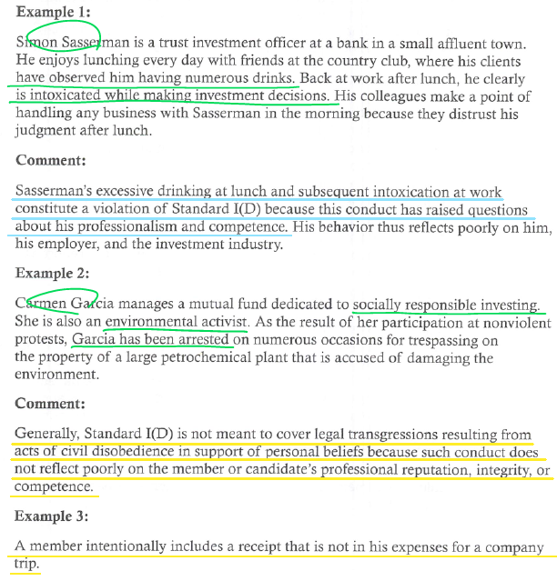
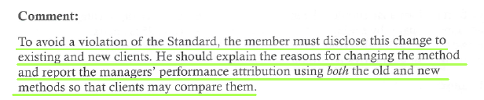

CFA Level 2 Ethical and Professional Standards

LOS 1.a: Describe the six components of the Code of Ethics and then seven Standards of Professional Conduct.
The code of Ethics
윤리
- Act with integrity, competence, diligence, and respect, and in an ethical manner with the public, clients, prospective clients, employers, employees, colleagues in the investment protection, and other participants in the global capital markets.
- Place the integrity of the investment profession and the interests of clients above their own personal interests.
- Use reasonable care and exercise independent professional judgment when conducting investment analysis, making investment recommendations, taking investment actions, and engaging in other professional activities.
- Practice and encourage others to practice in a professional and ethical manner that will reflect credit on themselves and the profession.
- Promote the integrity and viability of the global capital markets for the ultimate benefit of society.
- Maintain and improve their professional competence and strive to maintain and improve the competence of other investment professionals.
The standards of professional conduct
- Professionalism
- Integrity of capital markets
- Duties of clients
- Duties of employers
- Investment analysis, recommendations, and actions
- Conflicts of interest
- Responsibilities as a CFA Institute member or CFA candidate
LOS 1.b: Explain the ethical responsibilities required of CFA Institute members and candidates in the CFA Program by the Code and Standards.
Professionalism
A. Knowledge of the Law
B. Independence and Objectivity
C. Misrepresentation
D. Misconduct
Integrity of capital markets
A. Material Nonpublic Information
B. Market Manipulation
Duties of clients
A. Loyalty, Prudence, and Care
B. Fair Dealing
C. Suitability
D. Performance Presentation
E. Preservation of Confidentiality
Duties of employers
A. Loyalty
B. Additional Compensation Agreements
C. Responsibilities of Supervisors
Investment analysis, recommendations, and actions
A. Diligence and Reasonable Basis
B. Communications with Clients and Prospective Clients
C. Record Retention
Conflicts of interest
A. Disclosure of Conflicts
B. Priority of Transactions
C. Referral Fees
Responsibilities as a CFA Institute member or CFA candidate
A. Conduct as Participants in CFA Institute Programs
B. Reference to CFA Institute, the CFA Designation, and the CFA Program
LOS 2.a: Demonstrate a thorough knowledge of the CFA Institute Code of Ethics and Standards of Professional Conduct by applying the Code and Standards to specific situations.
LOS 2.b: Recommend practices and procedures designed to prevent violations of the Code of Ethics and Standards of Professional Conduct.
I. Professionalism
I(A) Knowledge of the Law
Members and Candidates must understand and comply with all applicable laws, rules and regulations (including the CFA Institute Code of Ethics and Standards of Professional Conduct) of any government, regulatory organization, licensing agency, or professional association governing their professional activities. In the event of conflict, Members and Candidates must comply with the more strict law, rule, or regulation. Members and Candidates must not knowingly participate or assist in and must dissociate from any violation of such laws, rules, or regulations.
Guidance-Code and Standards vs. Local Law
Members must know the laws and regulations relating to their professional activities in all countries in which they conduct business. Members must comply with applicable laws and regulations relating to their professional activity. Do not violate Code or Standards even if the activity is otherwise legal. Always adhere to the most strict rules and requirements (law or CFA Institute Standards) that apply.
Guidance-Participation or Association With Violations by Others
Members should dissociate, or separate themselves, from any ongoing client or employee activity that is illegal or unethical, even if it involves leaving an employer(an extreme case). While a member may confront the involved individual first, he must approach his supervisor or compliance department. Inaction with continued association may be construed as knowing participation. (미필적 고의)
Recommended Procedures for Compliance-Members
- Members should seek advice of counsel or their compliance department when in doubt.
- Members should document any violations when they disassociate themselves from prohibited activity and encourage their employers to bring an end to such activity.
- There is no requirement under the Standards to report violations to governmental authorities, but this may be advisable in some circumstances and required by law in others.
- Members are strongly encouraged to report other members’ violations of the Code and Standards.
Application of Standard I(A) Knowledge of the Law
I(B) Independence and Objectivity
Members and Candidates must use reasonable care and judgment to achieve and maintain independence and objectivity in their professional activities. Members and Candidates must not offer, solicit, or accept any gift, benefit, compensation, or consideration that reasonably could be expected to compromise their own or another’s independence and objectivity.
Guidance
Do not let the investment process be influenced by any external sources. Modest gifts are permitted. Allocation of shares is oversubscribed IPOs to personal accounts is NOT permitted. Distinguish between gifts from clients and gifts from entities seeking influence to the detriment of the client. Gifts must be disclosed to the member’s employer in any case, either prior to acceptance if possible, or subsequently.
Guidance-Investment Banking Relationships
Do not be pressured by sell-side firms to issue favorable research on current or prospective investment-banking clients. It is appropriate to have analysts work with investment bankers in “road shows” only when the conflicts are adequately and effectively managed and disclosed. Be sure there are effective “firewalls” between research/investment management and investment banking activities.
Guidance-Public Companies
Analysts should not be pressured to issue favorable research by the companies they follow. Do not confine research to discussions with company management, but rather use a variety of sources, including suppliers, customers, and competitors.
Guidance-Buy-Side Clients
Buy-side clients may try to pressure sell-side analysts. Portfolio managers may have large positions in a particular security, and a rating downgrade may have an effect on the portfolio performance. As a portfolio manager, there is a responsibility to respect and foster intellectual honesty of sell-side research.
Guidance-Fund manager and Custodial Relationships
Members responsible for selecting outside managers should not accept gifts, entertainment, or travel that might be perceived as impairing their objectivity.
Guidance-Performance Measurement and Attribution
성과기여도 발라내기
Performance analysts may experience pressure from investment managers who have produced poor results or acted outside their mandate. Members and candidates who analyze performance must not let such influences affect their analysis.
Guidance-Manager Selection
pay-to-play
Members and candidates must exercise independence and objectivity when they select investment managers. They should not accept gifts or other compensation that could be seen as influencing their hiring decisions, nor should they offer compensation when seeking to be hired as investment managers.
Guidance-Credit Rating Agencies
opinion임
Members employed by credit rating firms should make sure that procedures prevent undue influence by the firm issuing the securities. Members who use credit ratings should be aware of this potential conflict of interest and consider whether independent analysis is warranted.
Recommended Procedures for Compliance
- Create a restricted list and distribute only factual information about companies on the list.
- Restrict special cost arrangements
- Limit gifts
- Restrict employee investments in equity IPOs and private placements. Require pre-approval of IPO purchases.
- Firms should have formal written policies on independence and objectivity of research.
Application of Standard I(B) Independence and Objectivity

I(C) Misrepresentation

Members and Candidates must not knowingly make any misrepresentations relating to investment analysis, recommendations, actions, or other professional activities.
Guidance
Trust is a foundation in the investment profession. Do not make anFy misrepresentations or give false impressions. This includes oral, electronic, and social media communications. Misrepresentations include guaranteeing investment performance and plagiarism. Plagiarism encompasses using someone else’s work (reports, forecasts, models, ideas, charts, graphs, and spreadsheet models) without giving them credit. Knowingly omitting information that could affect an investment decision or performance evaluation is considered misrepresentation.
Models and analysis developed by others at a member’s firm are the property of the firm and can be used without attribution. A report written by another analyst employed by the firm cannot be released as another analyst’s work.
Recommended Procedures for Compliance
A written list of the firm’s available services and a description of the firm’s qualifications. Employee qualifications should be accurately presented as well. To avoid plagiarism, maintain records of all materials used to generate reports or other firm products and properly cite sources (quotes and summaries) in work products. Information from recognized financial and statistical reporting services need not be cited.
Members should encourage their firms to establish procedures for verifying marketing claims of third parties whose information the firm provides to clients.
Plagiarism
Plagiarism is defined as copying or using in substantially the same form materials prepared by others without acknowledging the source of the material or identifying the author and publisher of such material. Members and candidates must not copy (or represent as their own) original ideas or material without permission and must acknowledge and identify the source of ideas or material that is not their own.
Misrepresentation through plagiarism in investment management can take various form. The simplest and most flagrant example is to take a research report or study done by another firm or person, change the names, and release the material as one’s own original analysis. This action is a clear violation of Standard I(C). Other practices include 1) using excerpts from articles or reports prepared by other either verbatim or with only slight changes in wording without acknowledgement, 2) citing specific quotations as attributable to “leading analysts” and “investment experts” without naming the specific references, 3) presenting statistical estimates of forecasts prepared by others and identifying the sources but without including the qualifying statements or caveats that may have been used, 4) using charts and graphs without stating their sources, and 5) copying proprietary computerized spreadsheets or algorithms without seeking the cooperation or authorization of their creators.
Application of Standard I(C) Misrepresentation
I(D) Misconduct
Members and Candidates must not engage in any professional conduct involving dishonesty, fraud, or deceit or commit any act that reflects adversely on their professional reputation, integrity, or competence.
Guidance
Do not abuse CFA Institute’s Professional Conduct Program by seeking enforcement of this Standard to settle personal, political, or other disputes that are not related to professional ethics.
Application of Standard I(D) Misconduct

II Integrity of Capital Markets
II(A) Material Nonpublic Information
Members and Candidates who posses material nonpublic information that could affect the value of an investment must not act or cause others to act on the information.
Guidance
Information is “material” if its disclosure would impact the price of a security or if reasonable investors would want the information before making an investment decision. Ambiguous information, as far as its likely effect on price, may not be considered material. Information is “nonpublic” until it has been made available to the marketplace. an analyst conference call is not public disclosure. Selectively disclosing information by corporations creates the potential for insider-trading violations.
Some members and candidates may be involved in transactions during which they receive material nonpublic information provided by firms (e.g., investment banking transactions). Members and candidates may use the provided nonpublic information for its intended purpose, but must not use the information for any other purpose unless it becomes public information.
Guidance-Mosaic Theory
There is no violation when a perceptive analyst reaches an investment conclusion about a corporate action or event through an analysis of public information together with items of nonmaterial nonpublic information.
Guidance-Industry Experts
Members and candidates may seek insight from individuals who have specialized expertise in an industry. However, they may not act or cause others to act on any material nonpublic information obtained from these experts until that information has been publicly disseminated.
Recommended Procedures for Compliance
Make reasonable efforts to achieve public dissemination of the information.
- Substantial control of relevant interdepartmental communications, through a clearance area such as the compliance or legal departement.
- Monitor and restrict proprietary trading while a firm is in possession of material nonpublic information. - risk-arbitrage trading is not allowed.
- Prohibition of all proprietary trading while a firm is in possession of material nonpublic information may be inappropriate because it may send a signal to the market. In these cases, firms should take the contra side of only unsolicited customer trades. - market making is allowed
Application of Standard II(A) Material Nonpublic Information
II(B) Market Manipulation
Members and Candidates must not engage in practices that distort prices or artificially inflate trading volume with the intent to mislead market participants.
price or volume + intent
Application of Standard II(B) Market Manipulation
III Duties to Clients
III(A) Loyalty, Prudence, and Care

Members and Candidates have a duty of loyalty to their clients and must act with reasonable care and exercise prudent judgment. Members and Candidates must act for the benefit of their clients and place their clients’ interests before their employer’s or their own interests.
Guidance
Client interests always come first. Although this Standard does not impose a fiduciary duty on members or candidates where one did not already exist, it does require members and candidates to act in their clients’ best interest and recommend products that are suitable given their clients’ investment objectives and risk tolerances.
- manage polls of client assets in accordance with the terms of the governing documents, such as trust documents or investment management agreements.
- III(C) 고려, 문건대로 운영, beneficiary 고려 -> 그래도 원하면 IPS 변경
- Make investment decisions in the context of the total portfolio.
- Vote proxies in an informed and responsible manner. Due to cost benefit considerations, it may not be necessary to vote all proxies.
- Client brokerage, or “soft dollar” or “soft commissions” must be used to benefit the client.
- The “client” may be the investing public as a whole rather than a specific entity or person.
Recommended Procedures of Compliance
Submit to clients, at least quarterly, itemized statements (상세설명서) showing all securities in custody and all debits, credits, and transactions.
Soft-dollar standards
Application of Standard III(A) Loyalty, Prudence, and Care
III(B) Fair Dealing
Members and Candidates must deal fairly and objectively with all clients when providing investment analysis, making investment recommendations, taking investment action, or engaging in other professional activities.
Guidance
Do not discriminate against any clients when disseminating recommendations or taking investment action. Fairly does not mean equally. In the normal course of business, there will be differences in the time emails, faxes, etc., are received by different clients. Different service levels are okay, but they must not negatively affect or disadvantage any clients. Disclose the different service levels to all clients and prospects, and make premium levels of service available to all who wish to pay for them.
Guidance-Investment Recommendations
Give all clients a fair opportunity to act upon every recommendation. Client who are unaware of a change in a recommendation should be advised before the order is accepted.
Guidance-Investment Actions
Treat clients fairly in light of their investment objectives and circumstances. Treat both individual and institutional clients in a fair and impartial manner. Members and candidates should not take advantage of their position in the industry to disadvantage clients.
Recommended Procedures for Compliance
- Limit the number of people who are aware that a change in recommendation will be made.
- Shorten the time frame between decision and dissemination.
- Publish personnel guidelines for pre-dissemination-have in place guidelines prohibiting personnel who have prior knowledge of a recommendation from discussing it or taking action on the pending recommendation.
- Simultaneous dissemination of new or changed recommendations to all clients who have expressed an interest or for whom an investment is suitable.
- Develop written trade allocation procedures-ensure fairness to clients, timely and efficient order execution, and accuracy of client positions.
- Disclose trade allocation procedures.
- Disclose available levels of service.
Application of Standard III(B) Fair Dealing
III(C) Suitability
- When Members and Candidates are in an advisory relationship with a client, they must:
- Make a reasonable inquiry into a client’s or prospective clients’ investment experience, risk and return objectives, and financial constraints prior to making nay investment recommendation or taking investment action and must reassess and update this information regularly.
- Determine that an investment is suitable to the client’s financial situation and consistent with the client’s written objectives, mandates, and constraints before making an investment recommendation or taking investment action.
- Judge the suitability of investments in the context of the client’s total portfolio.
- When Members and Candidates are responsible for managing a portfolio to a specific mandate, strategy, or style, they must make only investment recommendations or take only investment actions that are consistent with the stated objectives and constraints of the portfolio.
Guidance
In advisory relationships, be sure to gather client information at the beginning of the relationship, in the form of an investment policy statement (IPS). Consider clients’ needs and circumstances and thus their risk tolerance. Consider whether or not the use of leverage is suitable for the client.
If a member is responsible for managing a fund to an index or other stated mandate, be sure investments are consistent with the stated mandates.
Recommended Procedures for Compliance
Members should put the needs and circumstances of each client and the client’s investment objectives into a written IPS for each client.
Application of Standard III(C) Suitability
III(D) Performance Presentation
When communicating investment performance information, Members or Candidates must make reasonable efforts to ensure that it is fair, accurate, and complete.
Guidance
Members must avoid misstating performance or misleading clients/prospects about investment performance of themselves or their firms, should not misrepresent past performance or reasonably expected performance, and should not state or imply the ability to achieve a rate of return similar to that achieved in the past. For brief presentations, members must make detailed information available on requests and indicate that the presentation has offered limited information.
Recommended Procedures for Compliance
Encourage firms to adhere to Global Investment Performance Standards.
- Considering the sophistication of the audience to whom a performance presentation is addressed.
- Presenting performance of weighted composite of similar portfolios rather than a single account.
- Including terminated accounts as part of historical performance and clearly stating when they were terminated.
- Including all appropriate disclosures to fully explained results (e.g., model results included, gross or net of fees, etc.).
- Maintaining data and records used calculate the performance being presented.
Application of Standard III(D) Performance Presentation


III(E) Preservation of Confidentiality
Members and Candidates must keep information about current, former, and prospective clients confidential unless:
- The information concerns illegal activities on the part of the client or prospective client,
- Disclosure is required by law, or
- The client or prospective client permits disclosure of the information.
Guidance
If illegal activities by a client are involved, members may have an obligation to report the activities to authorities. The confidentiality Standard extends to former clients as well.
The requirements of this Standard are not intended to prevent Members and Candidates from cooperating with a CFA Institute Professional Conduct Program (PCP) investigation.
Recommended Procedures for Compliance
Members should avoid disclosing information received from a client except to authorized co-workers who are also working for the client.
Application of Standard III(E) Preservation of Confidentiality
IV Duties to Employers
IV(A) Loyalty
In matters related to their employment, Members and Candidates must act for the benefit of their employer and not deprive their employer of the advantage of their skills and abilities, divulge confidential information, or otherwise cause harm to their employer.
Guidance
members must not engage in any activities which would injure the firm, deprive it of profit, or deprive it of the advantage of employees’ skills and abilities. Members should always place client interests above interests of their employer but consider the effects of their actions on firm integrity and sustainability.
Guidance-Independent Practice
Independent practice for compensation is allowed if a notification is provided to the employer fully describing all aspects of the services, including compensation, duration, and the nature of the activities and if the employer consents to all terms of the proposed independent practice before it begins.
Guidance-Leaving an Employer
Members must continue to act in their employer’s best interests until resignation is effective. Activities which may constitute a violation include:
- Misappropriation of trade secrets
- Misuse of confidential information
- Soliciting employer’s clients prior to leaving
- Self-dealing
- Misappropriation of client lists
Employer records on any medium (e.g., home computer, PDA, cell phone) are the property of the firm.
Once an employee has left a firm, simple knowledge of names and existence of former clients is generally not confidential. There is also no prohibition on the use of experience or knowledge gained while with a former employer. If an agreement exists among employers that permits brokers to take certain client information when leaving a firm, a member or candidate may act within the terms of the agreement without violating the Standard.
Guidance-Whistleblowing
There may be isolated cases where a duty to one’s employer may be violated in order to protect clients or the integrity of the market, and not for personal gain.
Guidance-Nature of Employment
If Members and Candidates are independent contractors, they still have a duty to abide by the terms of the agreement.
Application of Standard IV(A) Loyalty
IV(B) Additional Compensation Arrangement
Members and Candidates must not accept gifts, benefits, compensation, or consideration that competes with or might reasonably be expected to create a conflict of interest with their employer’s interest unless they obtain written consent from all parties involved.
Guidance
Compensation includes direct and indirect compensation from a client and other benefits received from third parties.
Application of Standard IV(B) Additional Compensation Arrangements
If a client gives us money for doing a good job (one time), we need to disclose it (though not necessarily in writing).
If we have an agreement with a client that we will receive money in the future for outperformance, we need to disclose that in writing.
For any side job that potentially competes with our employer, written permission is required.
For a side job (e.g., bartender) that’s unrelated to our primary job, no disclosure is required.
IV(C) Responsibilities of Supervisors

Members and Candidates must make reasonable efforts to ensure that anyone subject to their supervision or authority complies with applicable laws, rules, regulations, and the Code and Standards.
Guidance
Duty - Delegation 가능 / Responsibility - Delegation 불가
Members must make reasonable efforts to prevent employees from violating laws, rules, regulations, or the Code and Standards, as well as make reasonable efforts to detect violations.
Guidance-Compliance Procedures
Understand that an adequate compliance system must meet industry standards, regulatory requirements, and the requirements of the Code and Standards.
A member or candidate faced with no compliance procedures or with procedures he believes are inadequate must decline supervisory responsibility in writing until adequate procedures are adopted by the firm.
Recommended Procedures for Compliance
- Designate a compliance officer with authority clearly defined.
If there a violation, respond promptly and conduct a thorough investigation while increasing supervision or placing limitations on the wrongdoer’s activities.
Application of Standard IV(C) Responsibilities of Supervisors
V Investment Analysis, Recommendations, and Actions
V(A) Diligence and Reasonable Basis
Guidance-Reasonable basis
- Global and national economic conditions
- A firm’s financial results, operating history, and business cycle stage
- Fees and historical results for a mutual fund
- Limitations of any quantitative models used
- A determination of whether peer group comparisons for valuation are appropriate
Guidance-Using Quantitative Research
Members must be able to explain the basic nature of the quantitative research and how it is used to make investment decisions. Members should consider scenarios outside those typically used to assess downside risk and the time horizon of the data used for model evaluation to ensure that both positive and negative cycle results have been considered.
Guidance-Developing Quantitative Techniques
The Standard requires greater diligence of members and candidates who create quantitative techniques than of those who use techniques developed by others. Members and candidates must understand the technical details of the products they offer to clients. A member or candidate who has created a quantitative strategy must test it thoroughly, including extreme scenarios with inputs that fall outside the range of historical data, before offering it to clients.
Guidance-External Advisers
To review any external advisers
Guidance-Group Research and Decision Making
Even if a member does not agree with the independent and objective view of the group, he does not necessarily have to decline to be identified with the report, as long as there is a reasonable and adequate basis.
Application of Standard V(A) Diligence and Reasonable Basis
V(B) Communication with Clients and Prospective Clients
Members and Candidates must:
- Disclose to clients and prospective clients the basic format and general principles of the investment processes they use to analyze investments, select securities, and construct portfolios and must promptly disclose any changes that might materially affect those processes.
- Disclose to clients and prospective clients significant limitations and risks associated with the investment process.
- Use reasonable judgment in identifying which factors are important to their investment analyses, recommendations, or actions and include those factors in communications with clients and prospective clients. - factors up to you, but disclose
- Distinguish between fact and opinion in the presentation of investment analysis and recommendations.
Guidance
In preparing recommendations for structured securities, allocation strategies, or any other nontraditional investment, members should communicate those risk factors specific to such investments. In all cases, members should communicate the potential gains and losses on the investment clearly in terms of total return. Members are required to communicate significant changes in the risk characteristics of an investment process, including any risks and limitations that have been newly identified.
When using projections from quantitative models and analysis, members may violate the Standard by not explaining the limitations of the model and the assumptions it uses, which provides a context for judging the uncertainty regarding the estimated investment result.
Members and candidates must inform clients about limitations inherent to an investment. Liquidity refers to the ability to exit an investment readily without experiencing a significant extra cost for doing so. Capacity refers to an investment vehicle’s ability to absorb additional investment without reducing the returns it is able to achieve.
Recommended Procedures for Compliance
Selection of relevant factors in a report can be a judgment call, so be sure to maintain records indicating the nature of the research, and be able to supply additional information if it is requested by the client or other users of the report.
Application of Standard V(B) Communication with Clients and Prospective Clients
V(C) Record Retention
VI Conflicts of Interest
VI(A) Disclosure of Conflicts
Members and Candidates must make full and fair disclosure of all matters that could reasonably be expected to impair their independence and objectivity or interfere with respective duties to their clients, prospective clients, and employers. Members and candidates must ensure that such disclosures are prominent, are delivered in plain language, and communicate the relevant information effectively.
Guidance
Members must fully disclose to clients, prospects, and their employers all actual and potential conflicts of interest in order to protect investors and employers. These disclosures must be clearly stated. - All, actual, potential clients
Guidance-Disclosure to Clients
The requirement that all potential areas of conflict be disclosed allows clients and prospects to judge motives and potential biases for themselves. Disclosure of broker/dealer market-making activities would be included here. Board service is another area of potential conflict.
The most common conflict which requires disclosure is actual ownership of stock in companies that the member recommends or that clients hold.
Another common source of conflicts of interest is a member’s compensation/bonus structure, which can potentially create incentives to take actions that produce immediate gains for the members with little or no concern for longer-term returns for the client. Such conflicts must be disclosed when the member is acting in an advisory capacity and must be updated in the case of significant change in compensation structure.
Application of Standard VI(A) Disclosure of Conflicts
VI(B) Priority of Transactions
Investment transactions for clients and employers must have priority over investment transactions in which a Members or Candidates is the beneficial owner.
Guidance
Client transactions take priority over personal transactions and over transactions made on behalf of the member’s firm. Personal transactions may be undertaken only after clients and the member’s employer have had an adequate opportunity to act on a recommendation. Note that family member accounts that are clients accounts should be treated just like any client account; they should not be disadvantaged.
Recommended Procedures for Compliance
The following areas should be included:
- Limited participation in equity IPOs. Members can avoid these conflicts by not participating in IPOs.
- Restrictions on private placements.
- Establish blackout/restricted periods
- Reporting requirements. Supervisors should establish reporting procedures, including duplicating trade confirmations, disclosure of personal holdings/beneficial ownership positions, and preclearance procedures.
Application of Standard VI(B) Priority of Transactions
VI(C) Referral Fees
Impartiality, full cost of service -> disclosed by written
Guidance
Members must inform employers, clients, and prospects of any benefit received for referrals of customers and clients, allowing them to evaluate the full cost of the service as well as any potential partility.
Recommended Procedures for Compliance
At least quarterly, the nature and value of referral compensation received
Application of Standard VI(C) Referral Fees
VII Responsibilities as a CFA Institute Members or CFA candidate
VII(A) Conduct as Participants in CFA Institute Programs
Members and Candidates must not engage in any conduct that compromises the reputation or integrity of CFA Institute or the CFA designation or the integrity, validity, or security of CFA Institute programs.
It is not intended to prevent anyone from expressing any opinions or beliefs concerning CFA Institute or the CFA program.
This Standard applies to conduct which includes:
- Cheating on the CFA exam or any exam administered by CFA Institute (e.g., CIPM).
- Revealing anything about either broad or specific topics tested, content of exam questions, or formulas required or not required on the exam.
- Not following rules and policies of any CFA Institute program.
- Giving confidential information on the CFA program to candidates or the public.
- Improperly using the designation to further personal and professional goals.
- Misrepresenting information on the Professional Conduct Statement (PCS) or the CFA Institute Professional Development Program.
Members and candidates are not precluded from expressing their opinions regarding the exam program or CFA Institute but must not reveal confidential information about the CFA program.
Application of Standard VII(A) Conduct as Participants in CFA Institute Programs
VII(B) Reference to CFA Institute, the CFA Designation, and the CFA Program
Members and Candidates must not misrepresent or exaggerate the meaning or implications of membership in CFA Institute, holding the CFA designation, or candidacy in the CFA Program.
Guidance
Do not:
- Over-promise individual competence
- Over-promise investment results in the future
Guidance-CFA Institute Membership
- Sign PCS annually
- Pay CFA Institute membership dues annually